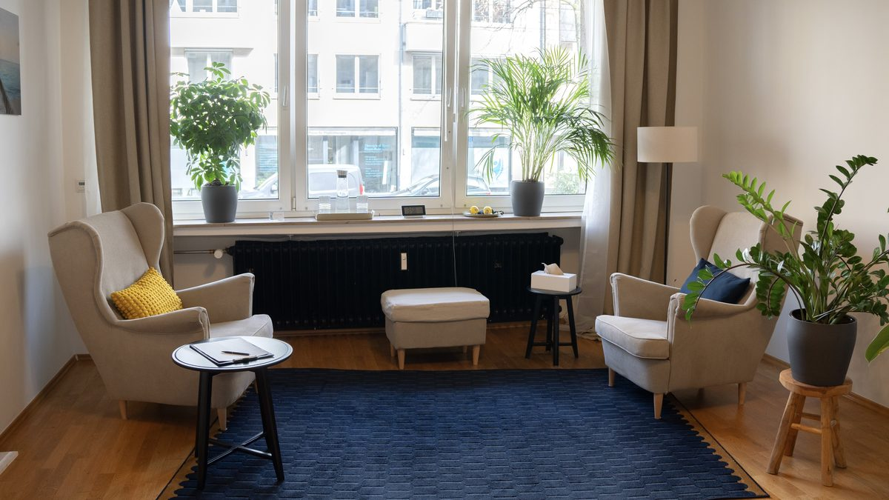

Контакти та запис на прийом
Запис на прийом відбувається різними шляхами залежно від вашого запиту — так кожному пацієнту зрозуміло, як це зробити найшвидше.
Перша консультація (загальна психотерапія)
Лише по телефону в години прийому. Запис електронною поштою для цього неможливий, оскільки перша консультація потребує короткої особистої попередньої бесіди.
Телефон
Години прийому
Пн–Ср, 12:00–13:00
Діагностика СДУГ
Лише електронною поштою. Будь ласка, коротко опишіть ваш запит — ми своєчасно відповімо з подальшими кроками.
Адреса практики
Практика психотерапії – Igor Liberchuk
Duisburger Str. 73, 40479 Düsseldorf ↗
